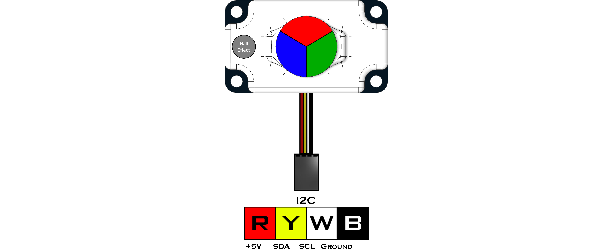

Color Beacon (45-2019)
The Color Beacon is used to display one of seven colors or any set custom color based on RGB values.
The beacon can also indicate Red/Blue team colors with the use of a magnet. There is no code or setup needed to operate as a team indicator. There is a Hall Effect sensor located on the left side of the sensors (wire pointed toward you). By holding a magnet over the top of the sensor it will blink green. After the green blink the beacon will be set to Red, Blue or Off. This can be done at any time and will overwrite any custom color or color number. When the beacon is Red or Blue from the Hall Effect sensor, it will be locked in that mode until turned Off using a magnet or disconnecting the sensor.
Sensor Type : Four Wire I2C
Default I2C Address : 0x4C
Sensor ID Code : 0x75
Dimensions : 56mm x 32mm x 17mm
Mounting Holes : 48mm x 24mm
Power : 5V DC, 22mA Max
Signal Logic Levels : Logic 0 - 0V, Logic 1 - 5V
I2C Bus Speed : 100kHz max
I2C Address Change Option : Yes (Even Number 0x10 - 0xEE)
LED Brightness : 840 Red, 1680 Green, 420 Blue mcd (millicandela)Color Beacon Visual Programming Blocks
Color Beacon Python Library Information

Register | Function |
|---|---|
0x00 | Sensor Firmware Revision |
0x01 | Manufacturer Code |
0x02 | Sensor ID Code |
0x03 | Not Used |
0x04 | Color Number |
0x05 | Red Strength |
0x06 | Green Strength |
0x07 | Blue Strength |
Color Value | Function |
|---|---|
N/A | Hall Effect changes LED (Red/Blue/Off) |
0 | LEDs Off |
1 | Red |
2 | Green |
3 | Yellow |
4 | Blue |
5 | Purple |
6 | Teal |
7 | White |
8 | Custom Color |
Color Number
The color number represents the color the Color Beacon will display. Values 0-7 display the colors as listed in the chart above. A value of 8 creates a custom color.
Custom Color
A custom color is created by entering a value of 8 into the color number register. Then using a 0-255 (0x00-0xFF) value, enter the Red (0x05), Green (0x06), and Blue (0x07) strength values into the corresponding registers.
Hall Effect Red/Blue Beacon
The Hall Effect sensor is located in the left side of the sensors (wire point toward you). By holding a magnet over the top of the sensor it will blink green. After the green blink the beacon will be set to red, blue or off. This can be done at any time and will overwrite any custom color or color number. When the beacon is red or blue from the Hall Effects sensor, the beacon will not be able to be changed from code. The beacon will need to be disconnected and reconnected, or switched to the off mode using a magnet.